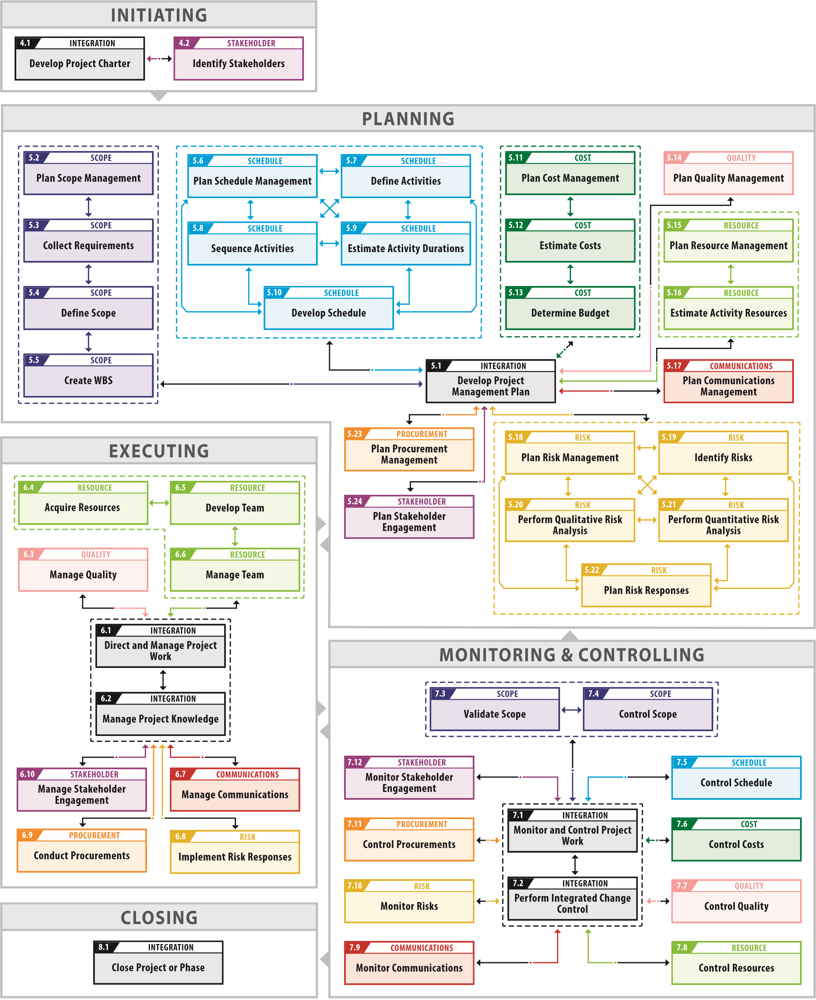

Agile Delivery Framework
PMBOK describes what a project needs; it does not say who in a delivery company does it, or what happens before the contract is signed. This is PMBOK 8 adapted to how outsourced delivery actually runs: pre-sale and discovery in front of the project, a delivery cycle that follows the team's real approach, and every duty mapped to the role and grade that owns it.
The map
Read it left to right, as a deal becomes a project. Pre-sale stands outside the project bracket — there is no project yet, only an estimate that has to be sold. Inside the bracket the standard's Focus Areas and domains keep their places; what is added is what the standard leaves to practice: who owns each piece of work, how the delivery cycle is run, and which artefacts each phase leaves behind. Colour shows the owner, position on the timeline shows the phase — hover a card for its links, click for the description and the PMBOK reference.
PMBOK 8 references are to the Guide unless marked as the Standard.
When the estimate confidence gate fails and discovery is inserted
Why the cycle changes shape
The delivery cycle is not ten fixed boxes with different captions. Each approach has its own structure, and the switcher redraws it from the source rather than relabelling it.
Scrum is a loop of four events around three artifacts. The Increment can be delivered as soon as it meets the Definition of Done — the Sprint Review inspects the outcome but is not a release gate, and there is no UAT or Definition of Ready in the Scrum Guide. Kanban has no iteration at all: work flows from the commitment point to the delivery point under WIP limits, and a set of cadences — from the daily Kanban Meeting to the quarterly Strategy Review — keeps it steered. SAFe nests two loops: team iterations inside a Planning Interval that ends with an Innovation and Planning iteration and Inspect & Adapt, while release is decoupled from that rhythm through the Continuous Delivery Pipeline. Incremental waterfall runs sequential phases with an acceptance gate and repeats them per increment.
What stays the same is the frame around the cycle: the Release Backlog feeds it and Release management takes its output, so nothing outside the block moves.
Discovery is a branch, not a stage
Pre-sale ends with a proposal when the estimate rests on a scope somebody can actually describe. When it does not — when there are more assumptions than requirements and the spread is too wide to trade on — the right move is not a padded number but a short paid discovery. That is why it hangs off a decision gate in a dashed frame and loops back into estimation rather than sitting in the flow.
The gate has three ways out, and all three are drawn: a narrowed estimate that goes to proposal, a switch from fixed price to T&M because the uncertainty survived, and walking away. Without the third one the gate is decorative.
Six versus eight
The edition switch is the honest way to show what is the standard and what is ours. In the sixth edition view the disciplines are as originally drawn. Switch to the eighth and four things move: Cost becomes Finance — no longer only spend but the financial viability of the result; Procurement narrows to Sourcing strategy, planned once, with execution moving into resources; Communications folds into Stakeholders; and Governance appears as a band running through everything.
Quality is the interesting one. In the eighth edition it stops being a knowledge area altogether. It does not disappear — it becomes the principle Embed Quality Into Processes and Deliverables and the process Manage Quality Assurance inside Governance (so it sits in the Governance band here, not in a box of its own), while the delivery cycle keeps verifying it every round. Quality stopped being a column and became a property of everything, which is exactly what the standard wanted to say.
What never switches: the grade legend, the artefacts layer and pre-sale. PMBOK says nothing about who is senior enough to own a document.
How this looked in PMBOK 6
This is the full PMBOK 6 process map: 49 processes in five process groups, colored by knowledge area and linked by their main inputs and outputs. As a reference it is accurate and, in its own way, elegant — every dependency the standard describes is there.

It is also hard to read. For a client, it answers a question they did not ask: they want to know what happens next, who owns it and when they will see a result, not how 49 processes feed each other. And even for a project manager who has not worked with PMI methodology, a map this dense takes real time to decode before it helps with a single decision.
That is why the framework above keeps the standard underneath but shows only what a team and a client act on: phases, owners by grade and the artifacts that change hands. The full map stays useful — as a reference for whoever maintains the process, not as the picture we lead with.